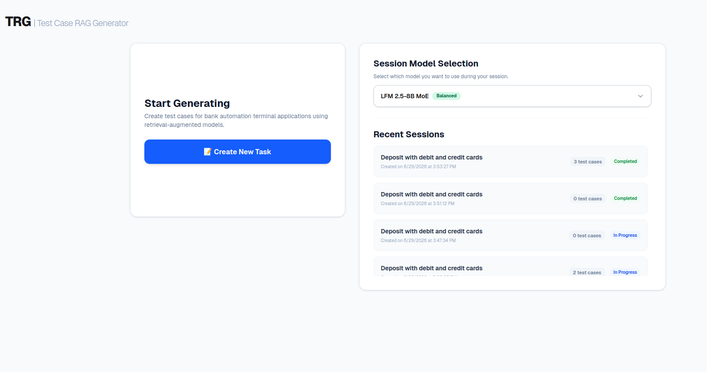
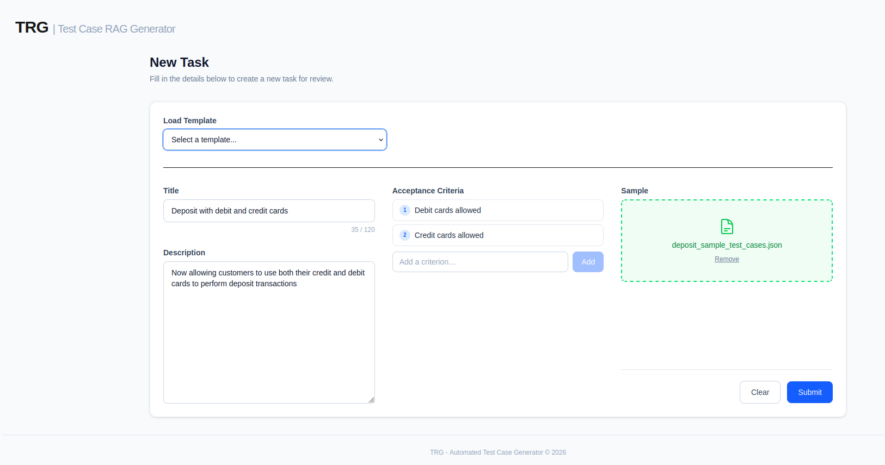
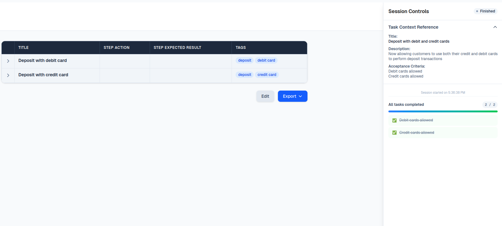

TRG reduces the friction of creating test cases by doing the boring lifting for you.
Express your interestStick to your testing standards with consistent, repeatable results. Enforce best practices.
Runs completely locally, ensuring your sensitive data remains secure. Feed your exact spec sheets and protocols directly into the logic layer.
Your testing rules serve as guardrails for newcomers. Monitor and review results continuously. Training becomes seamless and more straightforward.

Pick the right model for the task.

Provide the requirements passed from project management and any additional context needed.

Watch as the test cases are generated in real-time and edit them as needed.
Designed around edge models for efficient local processing. No data is leaving your device.
Adjustable system for your specific data formats and integration needs. Compliant with textbook QA practices. Enforces the use of best practices.
Monitor, review and export test cases. Highly readable tabular format built specifically for your custom functional frameworks. Supports integration with popular testing tools (Excel, Azure, Jira).
If you are interested in learning more, and for inquiries, contact me at g.antoniadis21@gmail.com